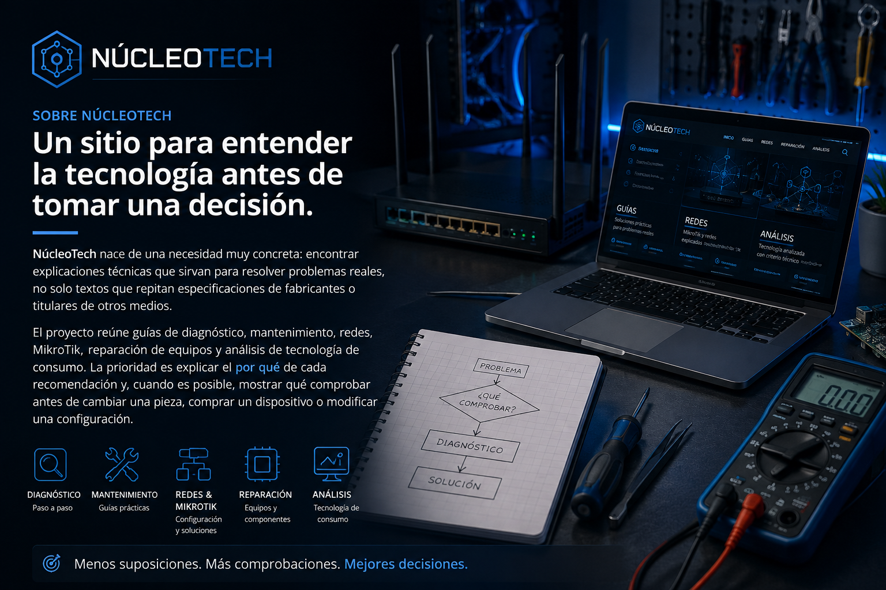

GuÃas prácticas
Procedimientos paso a paso para mantenimiento, configuración y diagnóstico, con criterios para saber cuándo avanzar y cuándo detenerse.
SOBRE NÚCLEOTECH

NUESTRO PROPÓSITO
Una ficha técnica puede decir que un equipo tiene más memoria, más núcleos, más megapÃxeles o una conexión más rápida. Eso no responde por sà solo a la pregunta que realmente importa: ¿esa diferencia cambia algo en mi uso?
Por eso nuestro contenido intenta traducir las caracterÃsticas técnicas a decisiones concretas. Si una actualización no aporta una mejora apreciable, lo explicamos. Si una reparación merece la pena, buscamos criterios para justificarla. Y si un procedimiento tiene riesgos, señalamos dónde conviene detenerse y recurrir a un profesional.
QUÉ PUBLICAMOS
Procedimientos paso a paso para mantenimiento, configuración y diagnóstico, con criterios para saber cuándo avanzar y cuándo detenerse.
Rutas de comprobación para celulares, PC, laptops y consolas antes de desmontar o sustituir componentes.
Conceptos y procedimientos de RouterOS orientados a observar, interpretar, configurar y verificar.
Cuando cubrimos una noticia externa, la resumimos con nuestras propias palabras, aportamos contexto y enlazamos la fuente original.
En lugar de perseguir especificaciones aisladas, explicamos qué caracterÃsticas importan según el uso y el presupuesto.
La comunidad sirve para convertir dudas, fallas y casos prácticos en material que pueda ser útil a otros lectores.
NÚCLEOTECH
El proyecto seguirá creciendo con material técnico, guÃas de diagnóstico, contenido de redes y noticias seleccionadas. Si encuentras un error o tienes un caso que merezca una explicación, puedes escribirnos.
Ponte en contacto